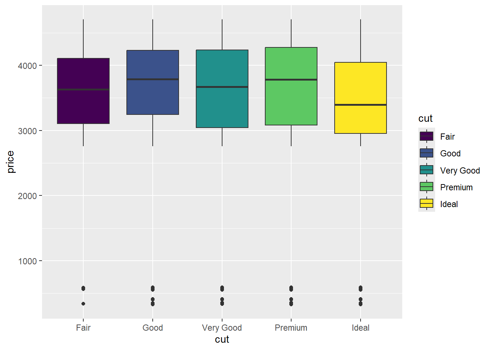

Check the R code and results and answer the questions below.
library(ggplot2)
str(diamonds)## tibble [53,940 × 10] (S3: tbl_df/tbl/data.frame)
## $ carat : num [1:53940] 0.23 0.21 0.23 0.29 0.31 0.24 0.24 0.26 0.22 0.23 ...
## $ cut : Ord.factor w/ 5 levels "Fair"<"Good"<..: 5 4 2 4 2 3 3 3 1 3 ...
## $ color : Ord.factor w/ 7 levels "D"<"E"<"F"<"G"<..: 2 2 2 6 7 7 6 5 2 5 ...
## $ clarity: Ord.factor w/ 8 levels "I1"<"SI2"<"SI1"<..: 2 3 5 4 2 6 7 3 4 5 ...
## $ depth : num [1:53940] 61.5 59.8 56.9 62.4 63.3 62.8 62.3 61.9 65.1 59.4 ...
## $ table : num [1:53940] 55 61 65 58 58 57 57 55 61 61 ...
## $ price : int [1:53940] 326 326 327 334 335 336 336 337 337 338 ...
## $ x : num [1:53940] 3.95 3.89 4.05 4.2 4.34 3.94 3.95 4.07 3.87 4 ...
## $ y : num [1:53940] 3.98 3.84 4.07 4.23 4.35 3.96 3.98 4.11 3.78 4.05 ...
## $ z : num [1:53940] 2.43 2.31 2.31 2.63 2.75 2.48 2.47 2.53 2.49 2.39 ...Answer: 5 kinds (1 mark), 53940 observations in the data set (1 mark), 10 variables (1 mark).
library(ggplot2) #load the package
ggplot(diamonds[1:100,], aes(x=carat, y=price, shape=cut)) + geom_point(size=2)## Warning: Using shapes for an ordinal variable is not advisedAnswer: package name: ggplot2 (1 mark), scatter plot (2 marks).
library(ggplot2)
ggplot(diamonds[1:10000,], aes(x=cut, y=price, fill=cut)) + geom_boxplot()
Compare the medians of price among different cut, give comments on the boxplot, large difference in price or not based on cut? (4 marks)
Answer: The medians are barely same, there is not large difference.
Suppose we are modeling a simple linear regression, y is the independent variable and x is the dependent variable.
x<-c(1,3,4,7,8)
y<-c(12,11,7,5,3)
cbind(x,y)## x y
## [1,] 1 12
## [2,] 3 11
## [3,] 4 7
## [4,] 7 5
## [5,] 8 3Answer: \(y=\beta_0+\beta_1x+\epsilon\) (2 marks)
Answer: \(\hat{y}=\hat{\beta}_0+\hat{\beta}_1x\) or \(\hat{y}=b_0+b_1x\) (2 marks)
Answer: \(e=y-\hat{y}\) or (\(\hat{\epsilon}=y-\hat{y}\) ) (2 marks)
Answer:
\[r=\frac{\sum(x-\bar{x})(y-\bar{y})}{\sqrt{\sum(x-\bar{x})^2\sum(y-\bar{y})^2}}=\frac{\sum(x-\bar{x})(y-\bar{y})}{(n-1)s_xs_y}\] (given \(\sum(x-\bar{x})(y-\bar{y})= -42.8\), \(s_x=2.88\), \(s_y=3.85\))
Answer:
cor(x,y)## [1] -0.9654146\[\hat{\beta}_1=b_1=r\frac{s_y}{s_x} , \quad \hat{\beta}_0=b_0=\bar{y}-b_1\bar{x}\] Answer:
summary(lm(y~x))##
## Call:
## lm(formula = y ~ x)
##
## Residuals:
## 1 2 3 4 5
## -0.2410 1.3373 -1.3735 0.4940 -0.2169
##
## Coefficients:
## Estimate Std. Error t value Pr(>|t|)
## (Intercept) 13.530 1.060 12.767 0.00104 **
## x -1.289 0.201 -6.414 0.00768 **
## ---
## Signif. codes: 0 '***' 0.001 '**' 0.01 '*' 0.05 '.' 0.1 ' ' 1
##
## Residual standard error: 1.158 on 3 degrees of freedom
## Multiple R-squared: 0.932, Adjusted R-squared: 0.9094
## F-statistic: 41.13 on 1 and 3 DF, p-value: 0.007681